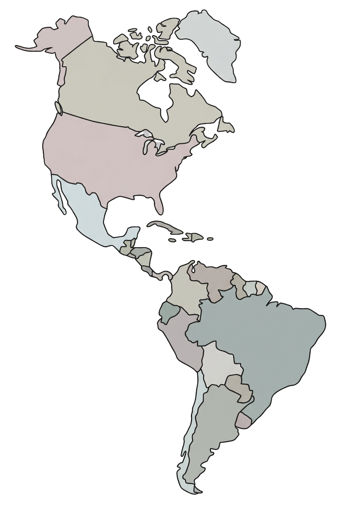

Every fall, billions of birds funnel down the Americas. Meet five
real migrations on the map, choose one to fly through the
gauntlet of a human-shaped world — and become the steward who
makes the route survivable.
Migration Map
Choose your migration
Five real fall migrations across the Americas. Hover a bird or
a route to trace its story.
Hover or select a bird on the map to learn its migration story.

Flyway · Fall passage
Journey Brief
🐦
Bird
This bird's journey isn't playable yet — you can still explore its
story on the map. The Ruby-throated Hummingbird's Gulf Marathon is
playable today.
Stopover
The flock rests
Steward ModeDo the human work that makes this hazard safe for good.
Migration report
The flock was lost
Landfall
The flock made it
How to play
Steer the flock — move the mouse (or ↑ / ↓) to guide your lead bird. The flock follows.
Read the sky — climb over glass towers, rise above the city's light-trap, thread between turbine blades.
Rescue — press Space as a hazard nears to slow time and pull the flock through safely. Rescues are limited and refill at each stopover.
Fat reserves drain as you fly and refill when you rest. Empty reserves start to cost you birds.
Stopovers — between legs, step into Steward Mode and advance a real conservation Campaign. Finishing one makes that hazard permanently safe for every future flock.